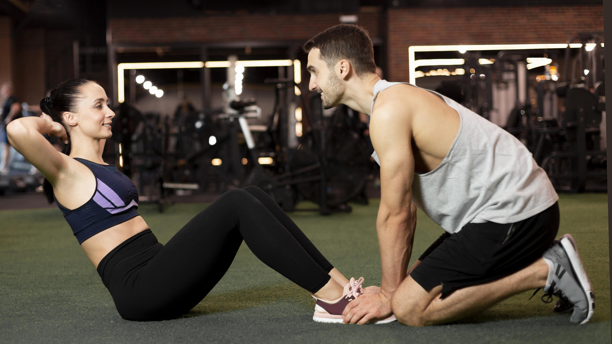
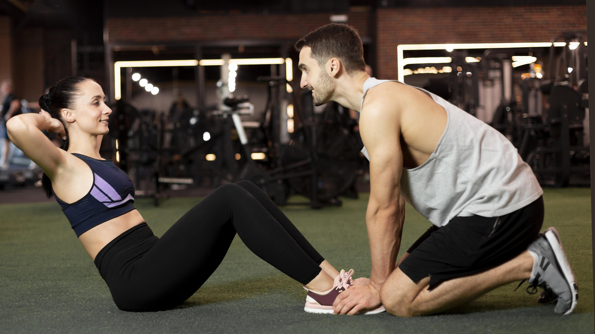
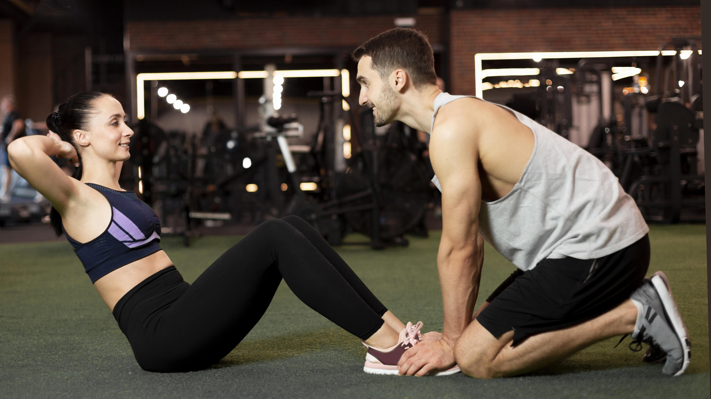
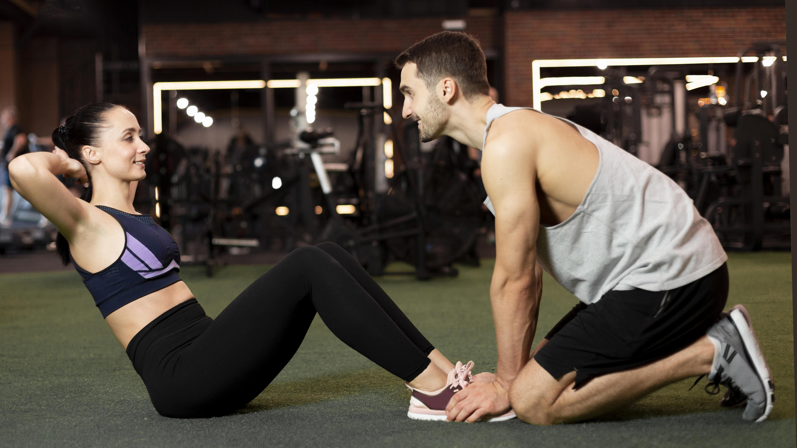

 

The kettlebell renegade row is a full-body exercise that builds upper body and back strength, significantly enhances core stability and anti-rotational strength, and improves functional fitness by demanding balance and coordination. Key benefits include improved posture and shoulder health, increased cardiovascular endurance and calorie burn, and better overall body control as the core must resist twisting while rowing. A renegade row is a compound exercise that involves holding a plank position on your hands or forearms while simultaneously pulling a kettlebell or dumbbell with one arm. This hybrid movement works multiple muscle groups at once, challenging your body to stabilize itself as you perform the row.
Core Strength & Stability: The plank position requires intense activation of your abdominal muscles (rectus
abdominis, transverse abdominis, and obliques) to prevent rotation, leading to significant core strength and
anti-rotational power.
Upper Body Strength: It builds strength in the back (lats, rhomboids, traps), biceps, triceps, and shoulders.
Improved Balance & Coordination: By placing one arm on the kettlebell, you destabilize your base, forcing your
body to work harder to maintain balance and coordinate movements